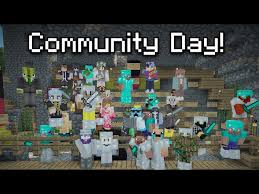
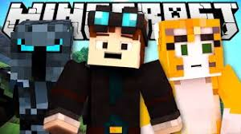

When Minecraft was first released in Beta the game was a huge hit. It became top charts almost instantly apon release. In the begining its community became tight nit. Over time its community came to be known as one of the few kind gaming communities.
Over the years Minecraft has been shown across multiple forms of social media. from Build posts on instagram to playthroughs on youtube and twitch. Though its content creators have changed slightly over the years it still has over 100 people making videos about it through multiple social media platforms. Some people in "generation Z" (1995-2010) Grew up watching these content creators and learning about the game through them
